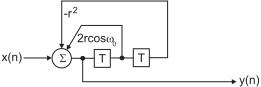
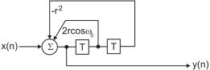
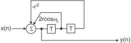

Next:
A list of popular
Up:
IIR Filter
Previous:
Fixed point IIR filters
Contents
Filter design based on analogue filters
Most IIR filters are designed from analogue filters by transforming from the continuous domain (
) to the sampled domain (

).
Subsections
A list of popular analogue transfer functions being used for IIR filter design:
How to transform the analogue lowpass filters into highpass, bandstop or bandpass filters?
Bilinear Transform: transforming the analoge transfer function into a digital one:
IIR filter design steps:
Time or frequency domain?
github / contact
 ) to the sampled domain
().
) to the sampled domain
().